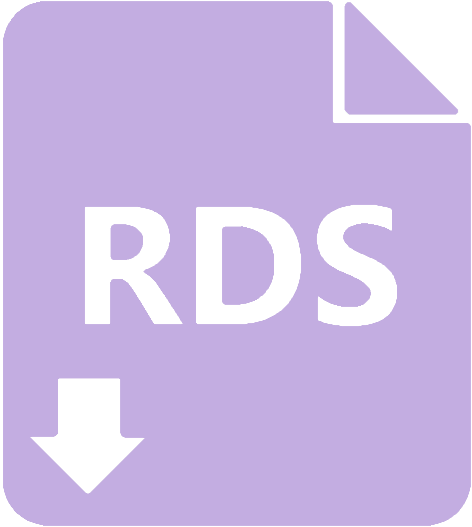
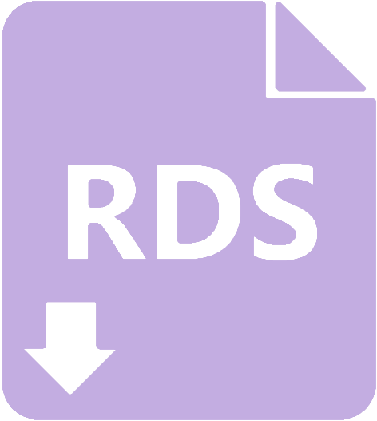

Example Data
Below are examples of ELR submissions stored in the Washington Disease Reporting System (WDRS) replica database ELR Entire table. Data structure and formatting are real, while specific values are not.
This table is intended to give a visual of how data are structured at the end of the process from sequencing by external labs to HL7 messaging and finally storage of sequencing metadata in WA DOH’s COVID-19 surveillance system.
Values are color-coded to reflect the piece of sequencing metadata they correspond to:
Strain names. Also labelled isolate in GenBank or virus name in GISAID. These values may be full/complete or partial. As an example, the strain name for a sequence in GenBank is
WA-CDC-LAB-12345. A lab might submit a full strain name via ELR (WA-CDC-LAB-12345), or they might submit a partial string (12345) which must be combined with lab-specific logic to create the final, full strain name.Pango lineages
Clinical accessions. This is the value used to link a sequencing result to a specific specimen and/or lab test. This is usually submitted as the filler order number. However, a variety of factors can influence where these data might be in ELR submissions, such as which lab is submitting the sequencing results to WA DOH and whether the same or different labs conducted the diagnostic and sequencing tests.
| CASE_ID | PCO | PCO_VALUE | SPEC_COLL_DTTM | FILLER_ORD_NUM | RESULT | SPEC_PLACER_ID | FILLER_ORD_ID | SPEC_FILLER_ID | PLACER_ORD_ID |
|---|---|---|---|---|---|---|---|---|---|
| Helix | |||||||||
| 101 | Sequencing study identifier | VSX-A0199 | 2025-07-08 | VSX-A0199 | SARS-CoV-2 R.5.7 lineage | ||||
| 101 | 2025-07-08 | VSX-A0199 | SARS-CoV-2 R.5.7 lineage | VSX-A0199 | VSX-A0199 | ||||
| 101 | Age | 5 | 2025-07-08 | VSX-A0199 | SARS-CoV-2 R.5.7 lineage | ||||
| 102 | Sequencing study identifier | VSX-A0712 | 2025-07-04 | VSX-A0712 | SARS-CoV-2 JM.2.5 lineage | ||||
| 102 | 2025-07-04 | VSX-A0712 | SARS-CoV-2 JM.2.5 lineage | VSX-A0712 | VSX-A0712 | ||||
| 102 | Age | 15 | 2025-07-04 | VSX-A0712 | SARS-CoV-2 JM.2.5 lineage | ||||
| 103 | Age | 96 | 2024-05-28 | VSX-A6025 | SARS-CoV-2 X.1.12 lineage | ||||
| 103 | Sequencing study identifier | VSX-A6025 | 2024-05-28 | VSX-A6025 | SARS-CoV-2 X.1.12 lineage | ||||
| 103 | 2024-05-28 | VSX-A6025 | SARS-CoV-2 X.1.12 lineage | VSX-A6025 | VSX-A6025 | ||||
| LabCorp | |||||||||
| 104 | Sequencing study identifier|LC Identifier | LC2679 | 2025-07-11 | 2211 | SARS-CoV-2 DQ.4.6.7 lineage; DQ.4.6.7 | 2211 | |||
| 105 | Sequencing study identifier | LC1227 | 2026-02-02 | 6890 | SARS-CoV-2 RAX.4.6.8 lineage; RAX.4.6.8 | 6890 | |||
| 106 | 2024-05-08 | 5016 | SARS-CoV-2 DE.6.5.4 lineage; DE.6.5.4 | 5016 | |||||
| Quest | |||||||||
| 107 | 2025-10-17 | 2412 | SARS-CoV-2 O.4.3.4 lineage | OW5143V | 2412 | 2412 | OW5143V | ||
| 107 | Sequencing study identifierAllowable | WA-QDX-2412 | 2025-10-17 | 2412 | SARS-CoV-2 O.4.3.4 lineage | ||||
| 107 | Original Submitter Lab SpecimenID | OW5143V | 2025-10-17 | 2412 | SARS-CoV-2 O.4.3.4 lineage | ||||
| 108 | 2024-02-28 | 0178 | SARS-CoV-2 R.5.7 lineage | OW2689W | 0178 | 0178 | OW2689W | ||
| 108 | Sequencing study identifierAllowable | WA-QDX-0178 | 2024-02-28 | 0178 | SARS-CoV-2 R.5.7 lineage | ||||
| 108 | Original Submitter Lab SpecimenID | OW2689W | 2024-02-28 | 0178 | SARS-CoV-2 R.5.7 lineage | ||||
| 109 | Sequencing study identifierAllowable | WA-QDX-0367 | 2024-05-01 | 0367 | SARS-CoV-2 TS.2.16 lineage | ||||
| 109 | 2024-05-01 | 0367 | SARS-CoV-2 TS.2.16 lineage | OW2180X | 0367 | 0367 | OW2180X | ||
| 109 | Original Submitter Lab SpecimenID | OW2180X | 2024-05-01 | 0367 | SARS-CoV-2 TS.2.16 lineage | ||||
| UW | |||||||||
| 110 | SEQUENCING STUDY IDENTIFIER | WA-CDC-UW8241 | 2026-03-16 | T4281 | SARS-CoV-2 CV.6.16 lineage | T4281 | T4281 | F4164 | T4281 |
| 111 | SEQUENCING STUDY IDENTIFIER | WA-CDC-UW0885 | 2026-03-14 | M0592 | SARS-CoV-2 M.1.5.19 lineage | M0592 | M0592 | F4164 | M0592 |
| 112 | SEQUENCING STUDY IDENTIFIER | WA-CDC-UW9694 | 2024-08-16 | X8663 | SARS-CoV-2 UIQ.2.12 lineage | X8663 | X8663 | F4164 | X8663 |
Raw data set:  

|
|
The HL7 content below is under construction. Links and data display may be broken and/or change.
#| '!! shinylive warning !!': |
#| shinylive does not work in self-contained HTML documents.
#| Please set `embed-resources: false` in your metadata.
#| standalone: true
#| viewerHeight: 650
library(shiny)
# import custom hl7 funs
library(dplyr)
library(stringr)
hl7_element_names <- function(v) {
#' Get dataframe with element names for HL7 fields
#'
#' Currently maps element names (at the field-level) for HL7 versions 2.3.1 and 2.5.1
#'
#' Parameters:
#' v: version number. Should be "2.3.1" or "2.5.1". Defaults to 2.5.1
#' Returns: df containing Segment (char), Name (char), and Field (int) fields
msh_231 = data.frame(
"Segment" = "MSH",
"Name" = c("Field Separator",
"Encoding Characters",
"Sending Application",
"Sending Facility",
"Receiving Application",
"Receiving Facility",
"Date/Time Of Message",
"Security",
"Message Type",
"Message Control ID",
"Processing ID",
"Version ID",
"Sequence Number",
"Continuation Pointer",
"Accept Acknowledgment Type",
"Application Acknowledgment Type",
"Country Code",
"Character Set",
"Principal Language Of Message",
"Alternate Character Set Handling Scheme")
) %>% mutate("Field" = seq(length(Name)))
msh_251 = rbind(
msh_231,
data.frame("Segment" = "MSH",
"Name" = "Message Profile Identifier",
"Field" = nrow(msh_231)+1)
)
obx_231 = data.frame(
"Segment" = "OBX",
"Name" = c("Set ID - OBX",
"Value Type",
"Observation Identifier",
"Observation Sub-ID",
"Observation Value",
"Units",
"References Range",
"Abnormal Flags",
"Probability",
"Nature of Abnormal Test",
"Observation Result Status",
"Date Last Obs Normal Values",
"User Defined Access Checks",
"Date/Time of the Observation",
"Producer's ID",
"Responsible Observer",
"Observation Method")
) %>% mutate("Field" = seq(length(Name)))
obx_251 = rbind(
obx_231,
data.frame("Segment" = "OBX",
"Name" = c("Equipment Instance Identifier",
"Date/Time of the Analysis",
"Reserved for harmonization with V2.6",
"Reserved for harmonization with V2.6",
"Reserved for harmonization with V2.6",
"Performing Organization Name",
"Performing Organization Address",
"Performing Organization Medical Director"),
"Field" = NA)
) %>% mutate(Field = seq(length(Name)))
obr_231 = data.frame(
"Segment" = "OBR",
"Name" = c("Set ID - OBR",
"Placer Order Number",
"Filler Order Number",
"Universal Service ID",
"Priority - OBR",
"Requested Date/Time",
"Observation Date/Time",
"Observation End Date/Time",
"Collection Volume",
"Collector Identifier",
"Specimen Action Code",
"Danger Code",
"Relevant Clinical Info",
"Specimen Received Date/Time",
"Specimen Source",
"Ordering Provider",
"Order Callback Phone Number",
"Placer Field 1",
"Placer Field 2",
"Filler Field 1",
"Filler Field 2",
"Results Rpt/Status Chng - Date/Time",
"Charge to Practice",
"Diagnostic Serv Sect ID",
"Result Status",
"Parent Result",
"Quantity/Timing",
"Result Copies To",
"Parent",
"Transportation Mode",
"Reason for Study",
"Principal Result Interpreter",
"Assistant Result Interpreter",
"Technician",
"Transcriptionist",
"Scheduled Date/Time",
"Number of Sample Containers",
"Transport Logistics of Collected Sample",
"Collector’s Comment",
"Transport Arrangement Responsibility",
"Transport Arranged",
"Escort Required",
"Planned Patient Transport Comment",
"Procedure Code",
"Procedure Code Modifier")
) %>% mutate("Field" = seq(length(Name)))
pid_231 = data.frame(
"Segment" = "PID",
"Name" = c("Set ID - PID",
"Patient ID",
"Patient Identifier List",
"Alternate Patient ID - PID",
"Patient Name",
"Mother’s Maiden Name",
"Date/Time of Birth",
"Sex",
"Patient Alias",
"Race",
"Patient Address",
"County Code",
"Phone Number - Home",
"Phone Number - Business",
"Primary Language",
"Marital Status",
"Religion",
"Patient Account Number",
"SSN Number - Patient",
"Driver's License Number - Patient",
"Mother's Identifier",
"Ethnic Group",
"Birth Place",
"Multiple Birth Indicator",
"Birth Order",
"Citizenship",
"Veterans Military Status",
"Nationality",
"Patient Death Date and Time",
"Patient Death Indicator")
) %>% mutate("Field" = seq(length(Name)))
pid_251 = rbind(pid_231,
data.frame("Segment" = "PID",
"Name" = c("Identity Unknown Indicator",
"Identity Reliability Code",
"Last Update Date/Time",
"Last Update Facility",
"Species Code",
"Breed Code",
"Strain",
"Production Class Code",
"Tribal Citizenship"),
"Field" = NA)
) %>% mutate(Field = seq(length(Name)))
nte_231 = data.frame(
"Segment" = "NTE",
"Name" = c("Set ID - NTE",
"Source of Comment",
"Comment",
"Comment Type")
) %>% mutate("Field" = seq(length(Name)))
orc_231 = data.frame(
"Segment" = "ORC",
"Name" = c("Order Control",
"Placer Order Number",
"Filler Order Number",
"Placer Group Number",
"Order Status",
"Response Flag",
"Quantity/Timing",
"Parent",
"Date/Time of Transaction",
"Entered By",
"Verified By",
"Ordering Provider",
"Enterer’s Location",
"Call Back Phone Number",
"Order Effective Date/Time",
"Order Control Code Reason",
"Entering Organization",
"Entering Device",
"Action By",
"Advanced Beneficiary Notice Code",
"Ordering Facility Name",
"Ordering Facility Address",
"Ordering Facility Phone Number",
"Ordering Provider Address")
) %>% mutate("Field" = seq(length(Name)))
nk1_231 = data.frame(
"Segment" = "NK1",
"Name" = c("Set ID - NK1",
"Name",
"Relationship",
"Address",
"Phone Number",
"Business Phone Number",
"Contact Role",
"Start Date",
"End Date",
"Next of Kin / Associated Parties Job Title",
"Next of Kin / Associated Parties Job Code/Class",
"Next of Kin / Associated Parties Employee Number",
"Organization Name - NK1",
"Marital Status",
"Sex",
"Date/Time of Birth",
"Living Dependency",
"Ambulatory Status",
"Citizenship",
"Primary Language",
"Living Arrangement",
"Publicity Code",
"Protection Indicator",
"Student Indicator",
"Religion",
"Mother’s Maiden Name",
"Nationality",
"Ethnic Group",
"Contact Reason",
"Contact Person’s Name",
"Contact Person’s Telephone Number",
"Contact Person’s Address",
"Next of Kin/Associated Party’s Identifiers",
"Job Status",
"Race",
"Handicap",
"Contact Person Social Security Number"
)
) %>% mutate("Field" = seq(length(Name)))
sft_251 = data.frame(
"Segment" = "SFT",
"Name" = c("Software Vendor Organization",
"Software Certified Version or Release Number",
"Software Product Name",
"Software Binary ID",
"Software Product Information",
"Software Install Date")
) %>% mutate("Field" = seq(length(Name)))
spm_251 = data.frame(
"Segment" = "SPM",
"Name" = c("Set ID -- SPM",
"Specimen ID",
"Specimen Parent IDs",
"Specimen Type",
"Specimen Type Modifier",
"Specimen Additives",
"Specimen Collection Method",
"Specimen Source Site",
"Specimen Source Site Modifier",
"Specimen Collection Site",
"Specimen Role",
"Specimen Collection Amount",
"Grouped Specimen Count",
"Specimen Description",
"Specimen Handling Code",
"Specimen Risk Code",
"Specimen Collection Date/Time",
"Specimen Received Date/Time",
"Specimen Expiration Date/Time",
"Specimen Availability",
"Specimen Reject Reason",
"Specimen Quality",
"Specimen Appropriateness",
"Specimen Condition",
"Specimen Current Quantity",
"Number of Specimen Containers",
"Container Type",
"Container Condition",
"Specimen Child Role")
) %>% mutate("Field" = seq(length(Name)))
if (v == "2.3.1") {
return(rbind(msh_231, obx_231, obr_231, pid_231, nte_231, orc_231, nk1_231, sft_251, spm_251))
} else if (v == "2.5.1") {
return(rbind(msh_251, obx_251, obr_231, pid_251, nte_231, orc_231, nk1_231, sft_251, spm_251))
} else {
warning("Version != 2.3.1 or 2.5.1; parsing with 2.5.1 schema")
return(rbind(msh_251, obx_251, obr_231, pid_251, nte_231, orc_231, nk1_231, sft_251, spm_251))
}
}
# Convert HL7 Strings into a table
parse_hl7 <- function(hl7, remove_pii=TRUE) {
#' Create a dataframe from raw HL7 message
#'
#' Segments should be separated by a carraige return and new line characters (\r\n)
#'
#' Parameters:
#' hl7: string form of the HL7 message
#' remove_pii: default TRUE; if TRUE, remove potential PII from PID segment and other fields, including some provider information
#'
#' Returns: df with a row for every distinct segment/field/repetition/component/subcomponent in the message. Output schema:
#' - Order (int): int sequence from 1-N for N total rows. The order of the elements in the message
#' - Value (char): the character value of the message element
#' - Position (char): Positional description of the element in the following format: Segment[Instance]-Field[Repetition].Component.Subcomponent
#' Instance, repetition, Component, and Subcomponent are excluded if they do not exist for that element.
#' (Instance is only include if >= 2 instances exist in the message for a given Segment)
#' - Name (char): The data element name for a given Segment's Field. Componenets and Subcomponents are not named in further detail.
#' - Segment (char): 3-character str containig Segment name
#' - Instance (int): the order the segment is in, relative to all other same-named segments. Value is NA is only one segment instance exists.
#' - Field (int): the order the field is in, relative to the other Fields in the same segment instance
#' - Repetition (int): the order the repetition is in, relative to the other Repetitions in the same Field instance
#' - Component(int): the order the Componenet is in, relative to the other Components in the same Field, or Repetition if it exists, instance
#' - Subcomponent (int): the order the Subcomponent is in, relative to the other Subcomponents in the same Component instance.
hl7 = gsub('\\\\&', '\\\\&', hl7) # replace amp replacement with just amp
hl7 = gsub('&', '&', hl7, fixed=TRUE) # replace amp replacement with just amp
hl7_fields_seps = gsub("^.{0,}MSH\\|", '', hl7) # get the MSH-2 elements which contain the componenet, rep, escape, and subcomponent chars
hl7_fields_seps = substr(hl7_fields_seps, 1, 4) # keep only the separator chars
hl7_seps_list = list("component" = substr(hl7_fields_seps, 1, 1), # set component separator char
"repetition" = substr(hl7_fields_seps, 2, 2), # set repetition separator char
"escape" = substr(hl7_fields_seps, 3, 3), # set escape char
"subcomponent" = substr(hl7_fields_seps, 4, 4)) # set subcomponent char
hl7 = gsub(paste0("MSH|", hl7_fields_seps), "MSH|__**separators**__", hl7, fixed=TRUE) # temporarily remove MSH-2 so special chars don't get targeted during transformations
# Get field names
hl7_version = gsub("^.{0,}MSH(\\|[^|]{0,}){10}\\|([0-9\\.]{3,})", '\\2', hl7) # remove version prefix
hl7_version = gsub("^([0-9\\.]+).+$", "\\1", hl7_version) # remove version suffix
element_names_df = hl7_element_names(hl7_version) # get names for fields
df = data.frame() # set empty df to capture message data
segments = unlist(strsplit(hl7, "\r\n", fixed=TRUE)) # split segments by carriage returns\new line combos
# Track occurrences of each segment type (used in naming of positions later)
segment_counts <- table(sapply(segments, function(segment) unlist(strsplit(segment, "|", fixed=TRUE))[1])) # Get counts of segment occurance
segment_instance_tracker <- list() # set empty list to track processing of segments
for (segment in segments) {
parts = unlist(strsplit(segment, "|", fixed=TRUE))
segment_name = parts[1]
if (segment_name != "MSH") {
if (length(parts) == 1) { # if there are no fields outside of the field name, set to null
parts = NULL
} else {
parts = parts[2:length(parts)] # otherwise, cutoff field name
}
}
# Track the instance number for the segment
if (!segment_name %in% names(segment_instance_tracker)) { # if segment name hasn't been processed prev, set count to 1
segment_instance_tracker[[segment_name]] <- 1
} else { # otherwise, add 1 to processing count
segment_instance_tracker[[segment_name]] <- segment_instance_tracker[[segment_name]] + 1
}
segment_instance <- segment_instance_tracker[[segment_name]] # After setting or adding to the processing count, get the count total
for (field_i in seq_along(parts)) { # break each field up into it's repetitions
repetitions = unlist(strsplit(parts[field_i], hl7_seps_list$repetition, fixed=TRUE))
if (length(repetitions) == 0) repetitions = ""
for (rep_i in seq_along(repetitions)) { # break each repetition up into it's components
components = unlist(strsplit(repetitions[rep_i], hl7_seps_list$component, fixed=TRUE))
if (length(components) == 0) components = ""
for (comp_i in seq_along(components)) { # break each component up into it's subcomponents
subcomponents = unlist(strsplit(components[comp_i], hl7_seps_list$subcomponent, fixed=TRUE))
if (length(subcomponents) == 0) subcomponents = ""
for (sub_i in seq_along(subcomponents)) {
include_segment_instance = segment_counts[segment_name] > 1 # include an Instance Value if there are more than 1 segment instances in message
new_df = data.frame("Segment" = segment_name, # set segment name
"Instance" = ifelse(include_segment_instance, segment_instance, NA), # set instance (if applicable)
"Field" = field_i, # Set field number
"Component" = ifelse(length(components) > 1, comp_i, NA), # set component number (if applicable)
"Subcomponent" = ifelse(length(subcomponents) > 1, sub_i, NA), # set subcomponent number (if applicable)
"Repetition" = ifelse(length(repetitions) > 1, rep_i, NA), # set repetition number (if applicable)
"Position" = paste0( # Create name for position in this format: segment[instance#]-field#[rep#].comp#.sub#
segment_name, # include segment
ifelse(include_segment_instance, paste0("[", segment_instance, "]"), ""), # include instance (if the segment occurs more than once)
"-", field_i, # include the field
ifelse(length(repetitions) > 1, paste0("[", rep_i, "]"), ""), # include the repetition (if field repeats more than once)
ifelse(length(components) > 1, paste0(".", comp_i), ""), # include the component (if the field has more than one component)
ifelse(length(subcomponents) > 1, paste0(".", sub_i), "") # include the subcomponent (if the component has more than one subcomponent)
),
"Value" = subcomponents[sub_i] # set the raw value
) %>%
left_join(element_names_df, by=c("Segment", "Field")) # Join the field names as a new field ("Name")
if (remove_pii) { # default is TRUE; if TRUE, remove potential PII
date_name = grepl("date|time", new_df$Name, ignore.case=T) # find fields with date or time in name
id_fields= c("ordering facility name",
"address",
"Message Control ID",
"Security",
"Ordering Provider",
"Performing Organization Medical Director",
"Producer's ID",
"Relevant Clinical Info",
"ssn",
"driver's license",
"Mother's",
"Patient Identifier",
"patient",
"phone",
"county",
"race",
"sex",
"marital",
"religion",
"ethnic")
id_name = grepl(paste0(id_fields, collapse="|"), new_df$Name, ignore.case=TRUE) # find fields that likely contain identifiers
id_name = id_name & new_df$Name != "Software Product Name" # remove Software name from masked ids
id_name = id_name | new_df$Segment == "PID" # include any PID segment fields
# mask dates
new_df[date_name, "Value"] = gsub("(^|\\D)(\\d{8})($|\\D)", # find YYYYMMDD strings
"\\1YYYYMMDD\\3",
new_df[date_name, "Value"])
new_df[date_name, "Value"] = gsub("(^|\\D)(\\d{12})($|\\D)", # find YYYYMMDDHHMM strings
"\\1YYYYMMDDHHMM\\3",
new_df[date_name, "Value"])
new_df[date_name, "Value"] = gsub("(^|\\D)(\\d{14})($|\\D)", # find YYYYMMDDHHMMSS strings
"\\1YYYYMMDDHHMMSS\\3",
new_df[date_name, "Value"])
# mask identifiers
new_df[id_name, "Value"] <- gsub("\\w|\\s", "__char__", new_df[id_name, "Value"])
# replace long strings (8+) of removed characters with some length of X's (between 5 and 10 repeats)
while(any(grepl('(__char__){8,}', new_df$Value))) {
new_df$Value = sub('__char____char____char____char____char____char____char__(__char__)+',
paste(rep("X", round(min(10, max(5, rnorm(1, 7, 1.75))))), collapse=""), new_df$Value)
}
new_df$Value = gsub("__char__", "X", new_df$Value, fixed=TRUE) # replace any shorter length of removed values
}
df = rbind(df, new_df) # append the new df to the growing final df
}
}
}
}
}
df$Value[df$Position == "MSH-2"] = hl7_fields_seps # re=set the separator text that was removed earlier
df$Order = seq_along(df$Segment) # Create Index to track absolute position within message
# Order cols in return df:
df = select(df, Order, Value, Position, Name, Segment, Instance, Field, Repetition, Component, Subcomponent)
return(df)
}
# Convert HL7 Dataframes back into strings:
generate_hl7 <- function(df, field_sep="|", segment_sep="\r\n") {
#' Flattens a df of HL7 elements into a single string
#'
#' Param:
#' - df: dataframe containing Value, Segment, Instance, Field, Repetition, Component, Subcomponent fields
#' (see parse_hl7 for field descriptions)
#' - field_sep: separator used between fields; default pipe ("|")
#' - segment_sep: separator used between segments; default carraige return + new line ("\r\n")
#'
#' Returns: character element with df$Value joined with appropriate separators based on MSH-2 values
#'
hl7_fields_seps = df$Value[df$Segment == 'MSH' & df$Field == 2] # keep only the separator chars
hl7_seps_list = list("component" = substr(hl7_fields_seps, 1, 1), # set component separator char
"repetition" = substr(hl7_fields_seps, 2, 2), # set repetition separator char
"escape" = substr(hl7_fields_seps, 3, 3), # set escape char
"subcomponent" = substr(hl7_fields_seps, 4, 4)) # set subcomponent char
segments = df %>%
select(Value, Segment, Instance, Field, Repetition, Component, Subcomponent) %>% # only keep necessary fields
group_by(Segment, Instance, Field, Repetition, Component) %>% # grouping excludes Value and Subcomponent
mutate(
Value = paste(Value, collapse=hl7_seps_list$subcomponent), # Collapse values by Subcomponent separator
Subcomponent = NULL # Drop Subcomponent so we can dedup below
) %>%
distinct() %>% # Remove duplicate rows which held subcomponent parts
group_by(Segment, Instance, Field, Repetition) %>% # Grouping excludes Component
mutate(
Value = paste(Value, collapse=hl7_seps_list$component), # Collapse values by Component separator
Component = NULL # Drop Component so we can dedup below
) %>%
distinct() %>% # Remove duplicate rows which held Component parts
group_by(Segment, Instance, Field) %>% # Grouping excludes repetition
mutate(
Value = paste(Value, collapse=hl7_seps_list$repetition), # Collapse values by Repetition separator
Repetition = NULL # Drop Repetition so we can dedup below
) %>%
distinct() %>% # Remove duplicate rows which held Repetitions
group_by(Segment, Instance) %>% # Grouping excludes Field
mutate(
Value = paste(Segment, paste(Value, collapse=field_sep), sep=field_sep), # Collapse values by Field separator; add the Separator str in front
Field = NULL # Drop Field so we can dedup below
) %>%
distinct() # Remove duplicate rows which held Fields
# We end with a df containing entire segment strings in the Value field
message = paste(segments$Value, collapse=segment_sep) # flatten to one string
message = gsub(paste0("^MSH.{", nchar(field_sep), "}MSH"), "MSH", message) # remove extra "MSH"
return(message)
}
# read in data from public github
viz_df <- read.csv(url("https://raw.githubusercontent.com/NW-PaGe/covid_seq_elr/refs/heads/main/data/example_hl7_viz.csv"))
# import ui code
ui <- fluidPage(
titlePanel("HL7 Viewer"),
fluidRow(
column(
width=6,
radioButtons(
inputId = "display_format",
label = "View as:",
choices = c("String"="String", "Table"="Table"),
selected = "String",
inline = TRUE # Display radio buttons horizontally
)
),
column(
width=6,
selectInput("selected_table", "Choose a Sumbitter/Case:",
choices = viz_df$Name, selected = viz_df$Name[1])
)
),
tags$hr(style = "border-top: 2px solid #000000; margin: 5px 0;"), # Adjust margin size before/after hr
htmlOutput("table_output") # Use htmlOutput for rendering HTML strings
)
# import server code
server <- function(input, output, session) {
# Render the selected kable table
output$table_output <- renderText({
selection <- viz_df$Name == input$selected_table
if (input$display_format == "String") {
HTML(viz_df$String[selection])
} else if (input$display_format == "Table") {
HTML(viz_df$Table[selection])
}
})
}
# Create shiny app w/shinylive
shinyApp(ui, server)